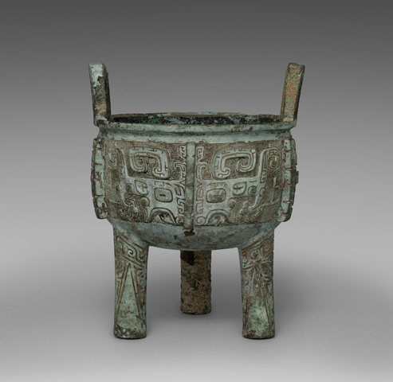
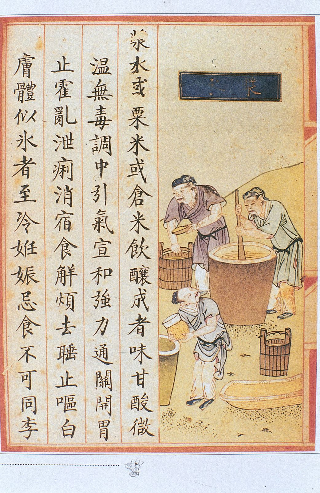
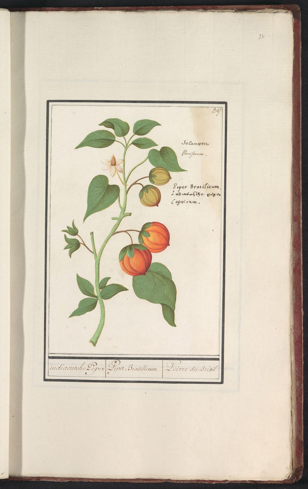

01先秦 · 约前2070—前221

北粟南稻，鼎鬲蒸煮
黄河流域以粟、黍为主粮，长江流域种稻；鼎、鬲用来煮，甑、甗用来蒸，调味靠盐、梅、饴、酒和肉酱，辛味来自花椒、姜和茱萸。《楚辞·招魂》开列的楚宫菜单和中原的「八珍」，已经是两套口味。
掐丝珐琅八吉祥纹大碗，明代，15 世纪末至 16 世纪初，口径 29.2 厘米。大都会艺术博物馆藏，公有领域。
00 · 序章
往下滚，或者拖底下的刻度尺：地图按时期换色，可以切换风味分区、口味主调和主食三种着色，这一期换了颜色的省份描红边。指一个省，看它那时属于哪一片。
第 1 / 10 期 · 夏 · 商 · 周 · 春秋战国
先秦
约前2070—前221
01先秦 · 约前2070—前221

黄河流域以粟、黍为主粮，长江流域种稻；鼎、鬲用来煮，甑、甗用来蒸，调味靠盐、梅、饴、酒和肉酱，辛味来自花椒、姜和茱萸。《楚辞·招魂》开列的楚宫菜单和中原的「八珍」，已经是两套口味。
地图按今天的 34 个省级行政区着色；各时期的分区是饮食文化区的示意，不是当时的政区边界，省内的差异（如陕北与陕南、桂北与桂南）没有区分。底图：阿里云 DataV GeoAtlas 省级边界，Albers 等积圆锥投影。
01 · 第一章
四条线各走各的：小麦要等石磨才流行，「炒」要等铁锅和煤，甜咸的南北在宋以后倒了个个，辣椒最后一个上桌。150 条要点，可以按线索读，也可以按时期读。

吃什么：主粮、肉、菜和调料从哪里来
黄河流域以粟（小米）、黍为主粮，长江流域以稻为主。小麦约在四千多年前自西亚传入，但要等到石磨出现才真正流行。
稻、黍、稷、麦、菽与马、牛、羊、鸡、犬、豕成为基本食谱；蔬菜以葵、韭、藿（豆叶）、薤、葱这“五菜”为主，菘（白菜）要到东汉以后才见于记载。
调味基本盘是盐、梅（酸）、饴与蜜（甜）、酒、醢（肉酱）；辛味来自花椒、姜、葱、蓼、茱萸、芥——此时没有辣椒，也没有蔗糖。
《楚辞·招魂》列出胹鳖炮羔、露鸡臛蠵、蜜饵粔籹等菜点，“大苦咸酸，辛甘行些”，可视为最早的一份南方风味清单。
战国末出现的旋转石磨在汉代普及，小麦得以磨粉，“饼”（汤饼、蒸饼、胡饼）成为北方主食，麦逐渐取代粟的地位。
张骞通西域（前139年出使，一说前138年）之后，葡萄、苜蓿、石榴、胡桃、胡麻（芝麻）、胡瓜、胡蒜、胡荽等陆续传入。
豆酱、豉、醯（醋）、酒在汉代已是家常，“醯酱千瓨”“糵曲盐豉千荅”被列为致富之业。
相传淮南王刘安发明豆腐，但可靠文字记载晚至五代宋初，汉墓画像的“豆腐作坊”解读尚有争议。
鲜卑、匈奴等入主中原，酥、酪、乳腐进入北方日常；南朝士人则以茶为饮、以鱼米自矜（“茗饮”与“酪浆”之争）。
《齐民要术》记录麦、稻、粟、黍、豆、瓜果、菜蔬近百种，以及胡饼、胡羹等胡食。
茶从药饮变成日常饮料，江南、巴蜀率先流行。
馄饨、水引饼（面条）、髓饼与“形如偃月”的饺子雏形都已见记载。
胡饼、毕罗、羊肉、葡萄酒风靡长安，“贵人御馔，尽供胡食”。
唐太宗遣使赴摩揭陀学熬糖法（贞观二十一年，647年），中国从此有了成规模的沙糖生产。
菠菜（波棱菜）自尼泊尔传入；西瓜五代时已由回纥传到契丹（胡峤《陷虏记》），传入中原、江南要到金与南宋。
陆羽《茶经》（约760—780年）确立煎茶法，茶成为南北通饮，“茶马互市”开始。
广州蕃坊聚居阿拉伯、波斯商人，胡椒、丁香、乳香与海产贸易兴盛。
1012年宋真宗自福建取占城稻种三万斛推广到江淮两浙，早熟耐旱，双季稻扩大，南方人口与稻米产量激增。
豆腐有“小宰羊”之称，苏轼等文人诗中常见；素菜仿荤（面筋、豆制品）成熟。
王灼《糖霜谱》（1154年）专记遂宁糖霜；蜜饯、糖水成为市井小食。
北宋宫廷“御厨止用羊肉”，猪肉为平民之食；南宋临安鱼虾海鲜大盛。
从煎茶转向点茶，建州北苑龙团凤饼贡茶。
宫廷“诈马宴”整羊烤炙；日常“秃秃麻食”（面片）、“搠罗脱因”等蒙古—回回食品见于食谱。
回回豆（鹰嘴豆）、回回葱、咱夫兰（藏红花）、马思答吉（乳香）；清真饮食成型，回族在元代形成。
“胡萝卜”之名见于元代，西瓜广泛种植。
李时珍称“烧酒非古法也，自元时始创其法”；元代蒸馏酒（阿剌吉）确已流行。
常被引为最早的是高濂《遵生八笺》（1591年初刻）：“番椒，丛生，白花，子俨秃笔头，味辣，色红，甚可观”——当观赏花木。但国家图书馆藏的一部初刻本没有这一条：闫哲认为是初刻后不久补刻，程杰认为抄自王象晋《群芳谱》（1621），后者才是最早可靠的记载。
1593年陈振龙从吕宋携薯藤回福建；玉米约16世纪中叶传入（《平凉府志》1560年记“番麦”）；花生（《常熟县志》1503年）、马铃薯、南瓜、番茄（“番柿”，观赏）陆续登陆。
《天工开物》（1637年）记“黄泥水淋法”制白糖，福建、广东成为糖业中心，糖价下降。
明代猪肉取代羊肉成为汉地主要肉食。
郑和下西洋带回大量胡椒，一度用作官俸发放。
浙江《山阴县志》（1671）说辣茄“可以代椒”，陈淏子《花镜》（1688）说“人多采用，研极细，冬月取以代胡椒”；康熙末年贵州《思州府志》记“海椒，俗名辣火，土苗用以代盐”，曹雨认为是方志里最早明确写到吃辣椒的记录。四川方志最早见于乾隆十四年（1749年）《大邑县志》“秦椒，又名海椒”；嘉庆以后黔、湘、川、赣普遍种植，清末徐心余说川人“每饭每菜，非椒不可”。
番薯、玉米、马铃薯在山区大规模推广，支撑清代人口从1亿到4亿的增长；番茄晚清才开始食用。
燕窝、鱼翅、海参、鲍鱼成为宴席等级标志，“海参席”“燕窝席”见于食单。
蚝油（李锦记，1888年）、六必居酱菜、郫县豆瓣、镇江香醋等地方调味品牌化。
便宜坊焖炉与全聚德（1864年）挂炉烤鸭。
日本“味の素”1909年上市，吴蕴初1923年在上海创办天厨味精厂，鲜味工业化。
西餐（“番菜”）在上海、天津、哈尔滨流行，面包、咖啡、罐头进入城市；哈尔滨红肠、大列巴受俄侨影响。
番茄、洋葱、卷心菜等“洋”菜普及，番茄炒蛋成为家常。
抗战时期粮食统制，杂粮与番薯保障了大后方。
东北由杂粮区变为最大的粳稻产区（朝鲜族移民引入水稻，1950年代后大规模开发北大荒），玉米转为饲料，肉蛋奶消费激增。
鸡精、蚝油、生抽老抽、郫县豆瓣、老干妈（1996年）、火锅底料把地方味标准化并全国流通。
反季节蔬菜与冷链（1990年代起）松动了地理对“时令”的约束，海鲜与热带水果走向内陆。
西兰花、生菜、牛油果、三文鱼、小龙虾（1990年代盱眙起）等常态化。
用什么做、用什么盛：从陶鬲、铜鼎到铁锅和电饭煲
釜（煮）、鼎（煮羹）、鬲（三足空心速煮）、甑与甗（蒸）在新石器晚期成熟，“蒸”从此成为中国独有的基本技法。
商周的鼎、簋、鬲、甗、豆、俎既是炊具也是礼器，“列鼎而食”规定了贵族餐桌的等级配置。
席地而坐、一人一案一俎的分餐制，要到唐宋才逐渐被合食制取代。
西周晚期已有人工冶铁（三门峡虢国墓地的铁刃铜器），春秋战国铁器渐多，战国铁釜开始进入厨房，但普及要到汉代。
汉武帝盐铁官营（前119年）后铁器大量生产，铁釜取代陶釜与青铜鼎成为主力炊具。
汉墓陶灶明器有多个火眼与烟囱，釜甑配套，“灶”成为厨房的中心。
石磨、碓、筛让谷物加工机械化，是面食流行的物质前提。
漆器与陶瓷食具流行，青铜礼器退出日常餐桌；仍是分餐，一人一案。
铁铛（平底浅锅）用于煎、炒；芝麻油与动物脂更充裕。
坐姿开始抬高，为后来的合食制埋下伏笔。
越窑青瓷碗盘取代部分漆器，南方瓷业兴起。
碓、磨、碾成套，水碓、水磨出现，谷物加工规模化。
瓷器全面取代漆器：邢窑白瓷“类银类雪”，越窑青瓷“类玉类冰”。
高足桌椅逐渐流行，晚唐至五代，合食制开始取代一人一案的分餐制。
陆羽列风炉、釜、碾、罗等成套茶具，饮茶成为器物系统。
北方城市开始用煤（“石炭”），铁锅铸造增多，为宋代炒菜的爆发准备燃料与器具。
汴京“数百万家，尽仰石炭，无一家燃薪者”，猛火与铁锅结合，炒法大兴。
高桌高椅普及，围桌共食成为常态。
汝、官、哥、钧、定与景德镇青白瓷，成套餐具供应酒楼与家庭。
《东京梦华录》记汴京有“川饭店”“南食店”，并分“北食”“南食”名店，另有专营羹、饼、素食的店铺，正店七十二家，并有外卖。
“阿剌吉”蒸馏器传入，白酒工艺的起点之一。
大都的汉、蒙、回三种饮食并存，饭馆按族群分设。
系统记录水磨、水碾等农产加工机械。
“广锅”行销全国甚至海外，铸铁锅质量与产量空前。
朱元璋罢团茶（1391年）后散茶冲泡成为主流，宜兴紫砂壶随之兴起。
景德镇青花成套餐具走进富户，八仙桌、圆桌合食制完全定型。
多火眼大灶、风箱与“锅台”成为北方民居标准。
清宫火锅盛行，嘉庆元年千叟宴（1796年）每席都上火锅（常说动用一千五百余只，未见档案原文）；北方铜锅涮肉、川渝铁锅麻辣火锅（清末重庆码头）起源。
砂锅、汽锅（云南建水）、瓦罐（江西）、蒸笼（粤式点心）等器具与地方菜互相塑造。
北方双耳生铁锅、南方单柄薄锅，广式“镬”配猛火灶讲究“镬气”。
北京“八大楼”“八大居”，扬州盐商家厨，广州茶楼“一盅两件”。
煤炉、洋铁（马口铁）壶锅、搪瓷器具进入家庭；煤气灶在上海租界出现。
北京八大楼（以鲁菜为主），上海本帮馆（老正兴）、川菜馆，广州“四大酒家”。
电冰箱与制冰厂让海鲜与冷饮走得更远。
燃气灶（1980—90年代城市普及）、电饭煲（1980年代引进）、高压锅、电磁炉、微波炉、空气炸锅（2020年前后）。
猛火灶、万能蒸烤箱与中央厨房；连锁餐饮（海底捞1994年）与预制菜（2020年代）。
2010年代外卖平台与冷链把“堂食”变成“到家”。
怎么做：炙、蒸、脍、炒，腌、酿、糟、醉
炙（直火烤）、燔（烧）、炮（裹泥烤）是最古老的火烹三法；水烹则有煮与羹（带汁炖煮）。
借甑与甗，中国是世界上最早把“蒸”作为主流炊法的地区。
脍是生切鱼肉薄片（“脍不厌细”），菹是腌渍蔬菜，醢是发酵肉酱——生食与发酵并存。
淳熬、淳母、炮豚、炮牂、捣珍、渍、熬、肝膋，涵盖煎、炮、捣、渍、腊等技法，是最早的成套烹饪工艺记录。
山东、河南汉画像石的“庖厨图”可见烤肉串、宰牲、切脍、蒸煮的全套流程。
揉、擀、蒸、烙、煮，汤饼（面片汤）是面条的祖先。
保存性技法成熟，《四民月令》按月记录制酱、酿酒、做酱菜的农家食事。
铁釜与动物油、芝麻油的出现，为“炒”准备了条件，但正式记载要到南北朝。
《齐民要术》记“炒鸡子法”：鸡蛋打破入铜铛，搅匀，下葱白、盐和整粒的豉（“浑豉”），“麻油炒之”——这是炒法的最早明确记载。
制曲、酿酒、作酱、作醋（“作酢法”二十余种）、作豉，以及腌菜、腊肉、鱼鲊——发酵技术全面成熟。
羹、臛、蒸、缹、炙、脍、脯等分类记载，仅炙法就有二十余种。
作酪、作酥、抨酪，记载乳酸发酵与酥油提取。
韦巨源献给唐中宗的烧尾宴，陶谷从韦家食账里择“奇异者”记下58种，涵盖蒸、煮、烤、炸、酿、脍、羹，如“光明虾炙”“金铃炙”“御黄王母饭”。
唐人食生鱼片风气冠绝历代，“斫脍”名手众多，配以橙、蒜、盐调成的“金齑”。
过水凉面（槐叶冷淘）与“汤中牢丸”（水饺汤圆类）见于诗文。
蒸饼、胡饼、饆饠的炉烤技术随胡食流行。
技法名目成型，《山家清供》《中馈录》等食谱记录家常做法。
林洪记武夷山涮兔肉，是火锅涮食的早期明确记载。
汤饼、馄饨、包子、馒头、角子（饺子）与冷淘，临安面店“各色面”上百种。
金华火腿、糟鱼、醉蟹等江南名产在南宋已具规模。
烤炙与整只烹饪：烤全羊、炙肉、羊肚等草原技法进入宫廷。
蒙古面片与回回“卷煎饼”，面食技法进一步与中亚交流。
《饮膳正要》把唐代孙思邈、孟诜以来的“食疗”与宫廷烹饪合在一起，养生饮食观念官方化。
炒、爆、熘、煎、炸、烹、烧、焖、炖、煨、蒸、烩、烤、涮、卤、酱、腌、糟、醉等技法名目基本齐备。
《宋氏养生部》《遵生八笺》《竹屿山房杂部》记录数百道菜的具体做法。
江南糟醉、山东爆炒、福建红糟等地方技法定型（徽州臭鳜鱼要到清代中期才有）。
光禄寺、尚膳监规模化，一般认为宫廷菜以山东厨师为主力，鲁菜进入宫廷。
满洲烧烤与汉族名菜合一，宴席程式化。
袁枚提出“须知单”“戒单”，讲火候、配搭、本味，是中国饮食美学的经典。
鲁菜清汤奶汤、淮扬清炖、粤菜上汤——“唱戏的腔，厨子的汤”。
川菜麻辣、鱼香、怪味、家常等味型在清末民初成形，“一菜一格，百菜百味”。
成都荣乐园（1912年）等名馆与蓝光鉴等名厨确立“一菜一格，百菜百味”的现代川菜体系。
“食在广州”口号（1920年代），点心、烧腊、汤品体系完成，并随华侨走向世界。
本帮浓油赤酱吸收苏锡、宁波、粤、川与西餐，形成融合风格。
现代食谱与烹饪教育萌芽。
1980年代烹饪专业进入职业教育，各菜系技法编成教材；中国烹饪协会1987年成立。
新派川菜、新派粤菜、创意淮扬与融合菜；米其林指南进入上海（2016年）、广州（2018年）、北京（2019年）。
麻辣火锅从重庆走向全国（1990年代起），成为最大单一餐饮品类。
沙县小吃（1990年代起）、兰州拉面（青海化隆人自1980年代在全国开店）、螺蛳粉（2010年代网红化）。
什么味道算好吃：五味调和、南北甜咸、辛与辣
酸苦甘辛咸相济成为核心审美，伊尹“说汤以至味”讲的正是火候与调味的分寸。
酸靠梅、甜靠饴蜜、咸靠盐与醢、辛靠椒姜——古人的“辣”指姜椒之辛，与后世辣椒之辣无关。
中原以羹醢为正统；楚地“大苦咸酸”；齐享鱼盐之利、以海味见长；巴蜀“尚滋味，好辛香”。
酱与豉带来的发酵咸鲜成为北方主调，“酱”从此是中国味觉的基石。
胡麻油、胡蒜、胡荽的香气进入中原饮食；胡椒此时尚未流行。
蔗糖尚未普及，甜味仍靠饴糖与蜂蜜；南方保持酸鲜、鱼鲜传统。
胡饼、羊肉、酥酪成为北朝风味。
莼羹鲈脍、鱼鲊、蟹酱，形成“南食”的审美——“千里莼羹，未下盐豉”。
西域来的胡椒开始用于肉食调味（“胡炮肉”用胡椒），是后世辛香料贸易的先声。
长安贵羊肉、贵胡食；胡椒昂贵到成为财富象征——宰相元载抄家时有胡椒八百石。
沙糖与蜂蜜并用，“糖霜”“蜜煎”出现。
韩愈贬潮州时写《初南食贻元十八协律》，记鲎、蚝、蒲鱼、蛤、章举等岭南海味，北方士人看来样样新奇；“南食”“北食”成对出现，要到北宋汴京的食店。
“大底南人嗜咸，北人嗜甘，鱼蟹加糖蜜，盖便于北俗也”——沈括记录了与今日相反的甜咸地理。
汴京川饭店卖插肉面、大燠面、大小抹肉淘、煎燠肉、杂煎事件、生熟烧饭，书里没说辣不辣；当时的“辛”靠花椒、姜、茱萸——这是没有辣椒的川味。
“酱油”一词见于《山家清供》，开始取代豉汁；临安的海鲜河鲜与清汤奠定后世“清鲜”审美。
成为北方上层主调；清真的咸香与孜然、胡椒、藏红花等香料进入西北与云南。
甜、鲜、糟醉；倪瓒《云林堂饮食制度集》记录苏南文人精致菜。
江南糖价下降、富庶精致，“甜”成为苏杭标志；北方以酱、盐为主——甜咸地理与宋代倒转。
明人吃辣靠花椒、姜、茱萸、胡椒、芥末。
徽商与晋商把家乡口味带到扬州、北京，商帮饮食成为“菜系”流动的推手。
黔（酸辣）、湘（香辣）、川渝（麻辣）、赣鄂（辣）形成辣味带；粤、江南、京鲁基本不辣。
咸鲜（鲁、京）、鲜甜（苏、锡、杭、沪）、清鲜（粤、闽）、麻辣（川）四大风味区成形；徐珂总结“肴馔之有特色者，为京师、山东、四川、广东、福建、江宁、苏州、镇江、扬州、淮安”——“菜系”这个词本身要到20世纪50—70年代才出现。
甜咸地理最终倒转为“南甜北咸”，与宋代记载相反。
1930年代上海酒菜业已有京、广、川、扬、本、苏、锡、宁、徽、闽、湘、豫、潮、杭及清真、素菜十六种地方风味；“菜系”一词约在1950—70年代出现，起点没有定论；1980年代仍以鲁、川、粤、苏“四大菜系”为主，“八大菜系”到1990年代才渐成共识。
抗战期间重庆、成都聚集全国人口，战后川菜随人流散到各地。
味精、酱油厂让“鲜”脱离高汤，成为工业味觉。
川湘菜馆遍布南北，辣味从“辣椒走廊”扩散到全国，年轻人口味嗜辣。
成为民间口诀，但现实是各地口味互相渗透。
粤菜清鲜（1980—90年代北上）、江浙甜鲜、川湘麻辣三种审美并存；奶茶等“甜饮”成为新味觉。
淮扬、本帮、潮汕、云南、新疆、贵州菜“出圈”，淄博烧烤（2023年）式的城市饮食IP。
02 · 第二章
十六世纪末进来，先当花看；康熙年间浙江才有人拿它「代椒」，贵州山里拿它「代盐」；四川的方志要到 1749 年才写到它。拖动年份，看 28 条早期记录怎样一个省一个省地亮起来。

1810年
21 个省级行政区有记录 · 28 条
1810 · 黑龙江 · 《黑龙江外记》卷8
（原文未引）
程杰列为东北北部的记载。
常被引为最早的是高濂《遵生八笺》（1591 年初刻）的「番椒」条，但国家图书馆藏的一部初刻本里没有这一条：闫哲认为是初刻后不久补刻的，程杰认为它抄自王象晋《群芳谱》（1621）。《遵生八笺》把它列在花木里，说它「色红，甚可观」；《群芳谱》虽放进蔬谱，也只写「色红鲜可观，味甚辣」，没说怎么吃。
浙江《山阴县志》（1671）说辣茄「可以代椒」，陈淏子《花镜》（1688）说「人多采用，研极细，冬月取以代胡椒」；曹雨只统计方志，把贵州《思州府志》（1721）「土苗用以代盐」算作最早的食用记载。「最早吃辣」是哪一年，取决于怎么算。
「秦椒」原本是花椒的一种。程杰把山东 1640、河北 1672、辽宁 1677、重庆 1737 等只写「秦椒」的条目都算作辣椒；若只认能和花椒分开的（据一篇 2023 年论文的转述，1697 年《深州志》把秦椒与「树生」的花椒分列），这些地方的首载都要往后推。关掉图上的开关，就是这种算法。
四川最早的记录是乾隆十四年（1749）《大邑县志》，雍正、嘉庆两部《四川通志》都没有辣椒；嘉庆以后才普遍种植。清末徐心余说川人「每饭每菜，非椒不可」（另有转述作「非辣不可」），花椒和辣椒合成的麻辣，到清末民初才定型。
方志、农书、菜谱与统计里的节点；可信度「低」的，不是只有一个弱来源，就是学者意见相反。
高濂《遵生八笺》记「番椒」，当观赏花木；国图一部初刻本无此条，闫哲认为是初刻后不久补刻，程杰认为是后来的弦雪居本抄自《群芳谱》。
中汤显祖《牡丹亭》花名里出现「辣椒花」，是否就是辣椒，学者意见相反。
低朝鲜《芝峰类说》记「南蛮椒」，程杰据此推测辣椒经朝鲜半岛先到山东。
中王象晋《群芳谱》：「番椒，亦名秦椒……色红鲜可观，味甚辣」，仍以观赏为主。
高浙江《山阴县志》「辣茄……可以代椒」，是最早的方志记载之一，也是调味的最早线索。
高《花镜》说辣椒「研极细，冬月取以代胡椒」，江南已有人拿它调味。
高贵州《思州府志》「土苗用以代盐」：曹雨统计方志，认为缺盐的黔东山区是最早明确吃辣椒的地方。
高四川最早记载见乾隆十四年《大邑县志》，而雍正、嘉庆两部《四川通志》都还没有辣椒。
高乾隆年间食辣扩到湘西、滇东北，《辰州府志》说当地「用以代胡椒」；整体扩散仍很慢。
中Dott：约1790年的《调鼎集》才第一次在菜谱里用辣椒。
中嘉庆以后黔、湘、川、赣普遍种辣椒，四川多县县志开始记载，曹雨说种子来自贵州。
高江西章穆《调疾饮食辨》说辣椒「今食者十之七八」。
中道光年间黔北「顿顿之食每物必蕃椒」，重庆城口把辣椒叫「黔椒」，《植物名实图考》说它「处处有之」。
中同治年间贵州人「四时以食」海椒（曹雨、蓝勇转述，原始出处未注）。
低二十世纪初，以贵州为中心的长江中上游重辣区成形，北到鄂西、东到湘赣、南到桂北、西到川滇。
中傅崇矩《成都通览》记成都菜1328种，辣椒已是川菜主要佐料；徐心余说川人「每饭每菜，非椒不可」。
高清末民初现代川菜味型基本定型，从「辛香」转向「麻辣」，花椒退守四川、与辣椒合成麻辣。
中最早登陆的广东一直清淡：民国二十年只有紫金、平远两县菜里用辣椒（转述蓝勇）。
低曹雨：辣椒真正遍及全国饮食，是1978年改革开放以后、随城市化和人口流动发生的。
中全国辣椒种植面积从20世纪80年代初不到26.67万公顷增至2015年214.67万公顷，成为种植面积最大的蔬菜。
中曹雨估算国内吃辣人口约5亿，并说「辣味的流行是近三十年来的一个突出饮食现象」。
中03 · 第三章
每一行是一个今天的省级行政区，十格色条是它在十个时期属于哪个菜系家族。可以按地区、按家族、按今天的口味重排；点开一行读它的沿革。
元大都、明清帝都八百年，宫廷菜、官府菜（谭家菜）、清真菜与鲁菜四流汇合。烤鸭相传随永乐迁都自南京北来，涮羊肉承自草原，炸酱面是北方酱食传统的家常版。
漕运码头与九国租界造就了津菜：河海两鲜是本钱，“八大碗”“四大扒”是市井宴席，狗不理（1858年）、煎饼馃子是街头名片。
冀菜分三派：冀中南的直隶官府菜（保定）、塞外承德的宫廷野味、沿海唐山的海鲜。地处京师周边，长期为京菜输送食材与厨师。
“世界面食在中国，中国面食在山西”。晋商把面食与醋带到塞北、京津；老陈醋（清徐）是山西味觉的核心，酸而不涩。
草原饮食以“红食”（肉）与“白食”（奶）为纲；清代晋商“走西口”带来烧麦与面食，呼和浩特成为蒙汉饮食交汇处。
满族饮食底色加上闯关东的山东、河北移民，形成炖菜与酱食为主的东北菜；辽菜受鲁菜影响最深，大连海鲜自成一格。
长白山物产与延边朝鲜族饮食（冷面、辣白菜、打糕）让吉林在东北菜中独具一格；朝鲜族移民也是东北水稻种植的先驱。
北大荒开发让黑龙江从渔猎与杂粮之地变成中国最大的粳稻产区；哈尔滨的俄侨留下红肠、大列巴与啤酒，锅包肉则是清末为俄国客人改良的东北菜。
1843年开埠后，上海从松江府上海县的本地饮食变成“海派”：本帮浓油赤酱吸收苏锡甜、宁波咸鲜、粤菜精细与西餐，是近代中国融合菜的典型。
八大菜系之一，分淮扬、金陵、苏锡、徐海四派。淮扬菜以扬州盐商与文人饮食为源，讲究刀工、火候与本味，是国宴的重要基底。
八大菜系之一，杭州、宁波、绍兴、温州四路。南宋定都临安留下的“南食”传统，与黄酒糟醉、东海海鲜合为浙菜。
八大菜系之一，源于徽州山区。明清徽商把徽菜开到扬州、汉口、上海，鼎盛时上海徽菜馆数以百计；山珍、火腿与“臭”味发酵是其特色。
八大菜系之一，福州、闽南、闽西三派。海洋、山地与南洋往来塑造闽菜：佛跳墙是清末福州的宴席顶点，沙茶来自南洋，番薯1593年由陈振龙从吕宋引入福建（广东东莞1582年已有引种）。
介于湘、闽、徽之间，清代辣椒进入后与湖南同属“辣椒走廊”；瓦罐煨汤与米粉是日常，景德镇则为全国餐桌供应瓷器上千年。
八大菜系里常排第一，分济南、胶东、孔府三派。从齐鲁的鱼盐之利、孔子的“食不厌精”，到《齐民要术》的酿造与“炒”，再到明清宫廷御膳与北京八大楼，鲁菜是北方菜的母本。
闽南、客家移民饮食打底，日据时期日式影响，1949年后各省菜汇聚为“眷村菜”；珍珠奶茶（1980年代）是台湾饮食最成功的输出。
中原是鼎食礼制与北宋汴京饮食的故乡，《东京梦华录》所记食店与今日豫菜的扒、烧一脉相承；烩面与胡辣汤是近百年的市井创造。
楚地“鱼米之乡”，蒸菜与煨汤是主线；汉口码头造就了热干面（1930年代）与早点文化，鸭脖卤味是1990年代以来的新名片。
八大菜系之一，湘江、洞庭、湘西三派。楚地的酸与辛在清代遇上辣椒，形成“无辣不欢”的湘味；2000年以来湘菜馆随川菜之后席卷全国。
八大菜系之一，广府、潮汕、客家三派。从南越王墓的海产遗骸、唐宋广州港的香料，到清代一口通商与茶楼，粤菜以“清鲜”与开放著称，并随华侨成为世界上传播最广的中国菜。
桂北受湘黔影响酸辣，桂南与粤菜相通清淡；米粉是共同语言，螺蛳粉从1980年代柳州夜市走到2010年代的全国网红。
“四大名菜”以白切、清蒸见长，是岭南清鲜审美的海岛版本；海南鸡饭随琼籍华侨传到新马，成为东南亚名菜。
1842年开埠后，广府饮食与英式茶餐融合出茶餐厅（1950年代）；港式茶餐厅文化与烧腊、点心一起反向影响内地。
1557年葡人居留以来，澳门是美洲作物与葡式饮食的海路入口；土生葡菜把非洲、印度、东南亚香料与广府技法合于一炉。
清末民初长江码头的毛肚火锅发展为重庆火锅；抗战陪都汇聚全国口味，1990年代火锅与“江湖菜”从重庆走向全国。
八大菜系之一。从巴蜀“尚滋味，好辛香”、宋代汴京的“川饭店”，到清代“湖广填四川”后辣椒与花椒相遇，麻辣川菜在清末民初定型，1990年代起成为全国最流行的菜系。
按曹雨《中国食辣史》的说法，是方志里最早明确记载吃辣椒的地方——康熙末年《思州府志》说“土苗用以代盐”。苗侗酸汤与糟辣椒是黔味之本，老干妈（1996年）把贵州辣酱送上全世界的餐桌。
南诏、大理与元明移民层叠出多民族饮食；建水汽锅、蒙自米线、大理乳扇各有来历，菌子季是当代滇菜最大的“出圈”标签。
青稞是大麦约四千年前传上高原后形成的裸粒品种，酥油茶随宋以后的茶马贸易逐渐成为日常；藏餐是高原环境的直接产物，牧区“肉奶”与农区“糌粑”并行。
周秦汉唐的都城所在，胡食风尚的第一站；今日关中面食的“油泼”“泡馍”与唐代的胡饼、羊肉一脉相承，陕北杂粮、陕南稻米各成一派。
河西走廊是丝路饮食的走廊，清真牛羊面食是主线；兰州牛肉面（1915年马保子）以“一清二白三红四绿”成为全国最普及的地方小吃之一。
河湟谷地是农牧交界，汉、回、藏、撒拉饮食并存；化隆人自1980年代起在全国和海外开出两万多家“兰州拉面”店。
回族聚居区，清真牛羊肉与面食是主线；元代回回聚居西北的历史在此留下最深的饮食印记。
西域绿洲饮食自小河墓地的小麦、汉唐的胡食延续至今；1884年建省后各族移民汇聚，大盘鸡（1980年代沙湾）是新疆菜里最年轻的名菜。